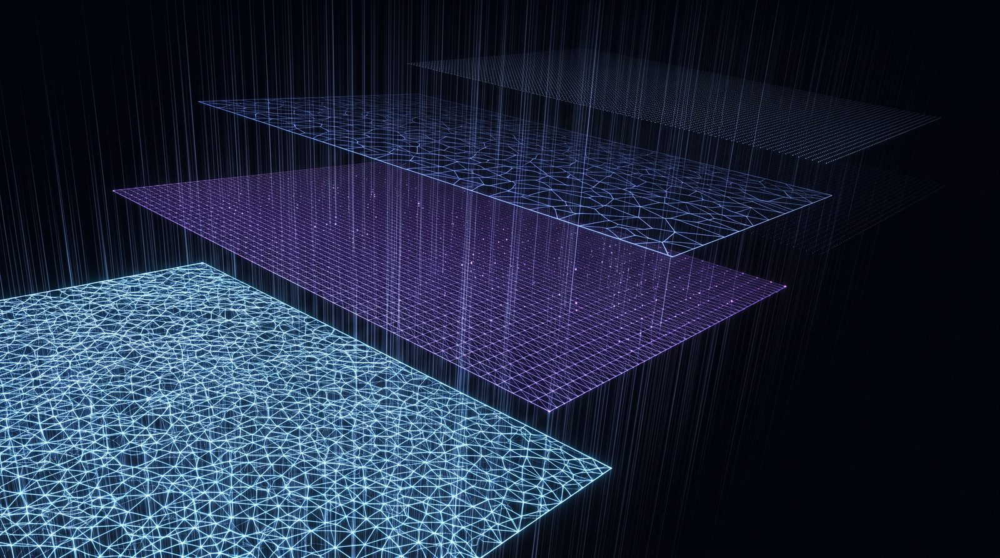
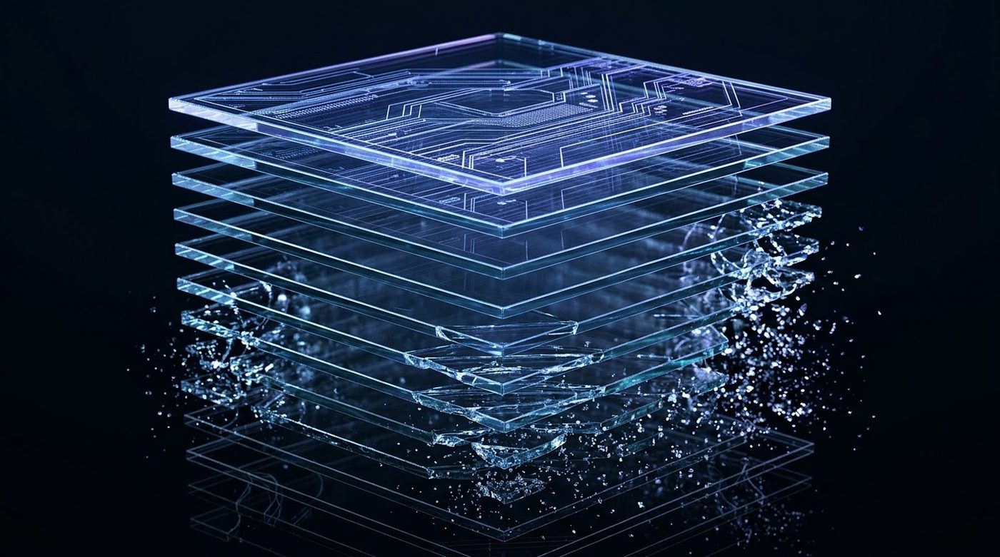
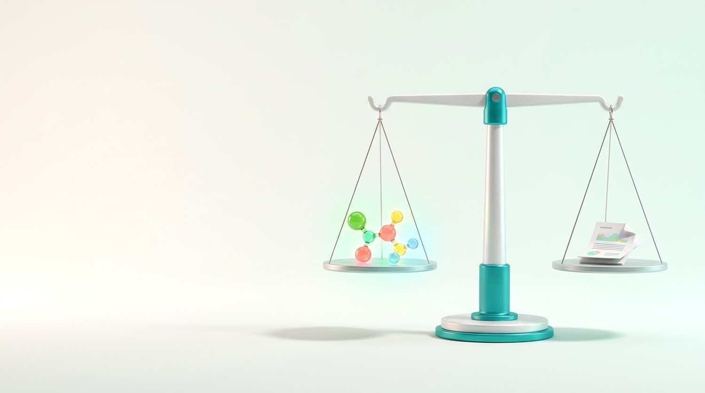
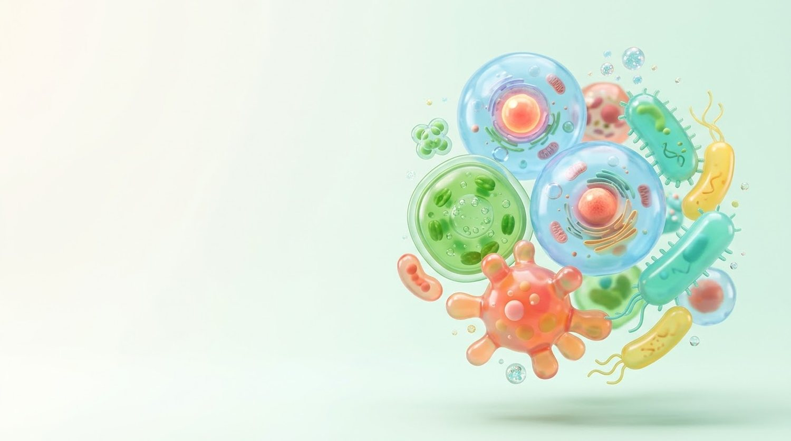
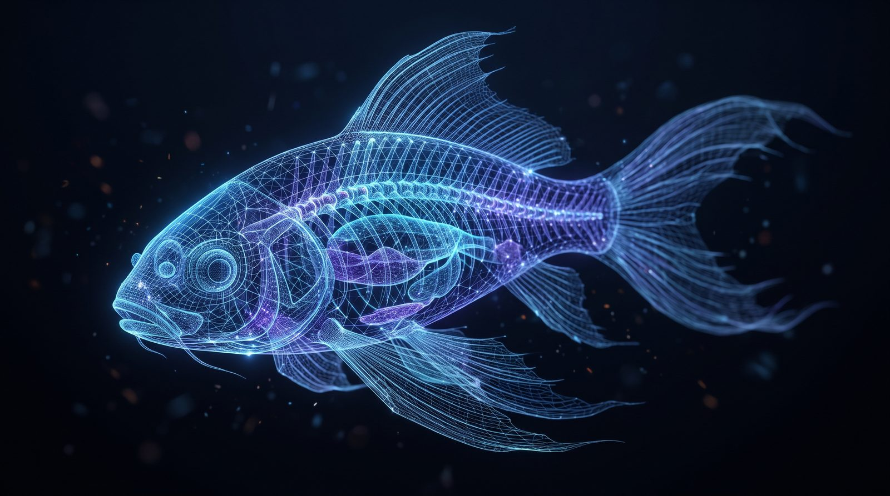
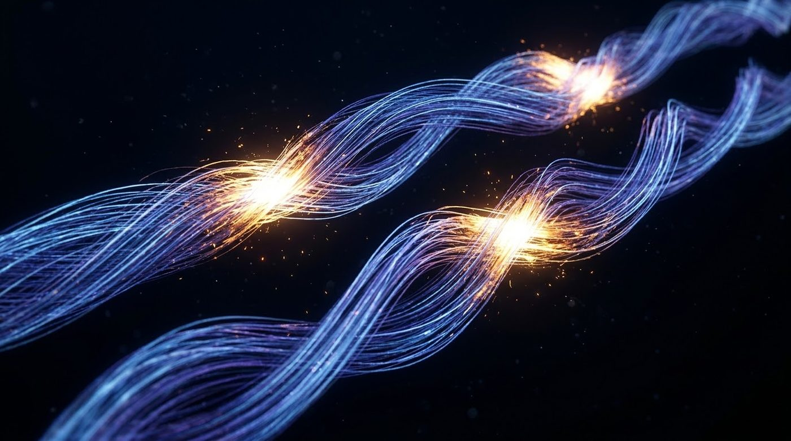
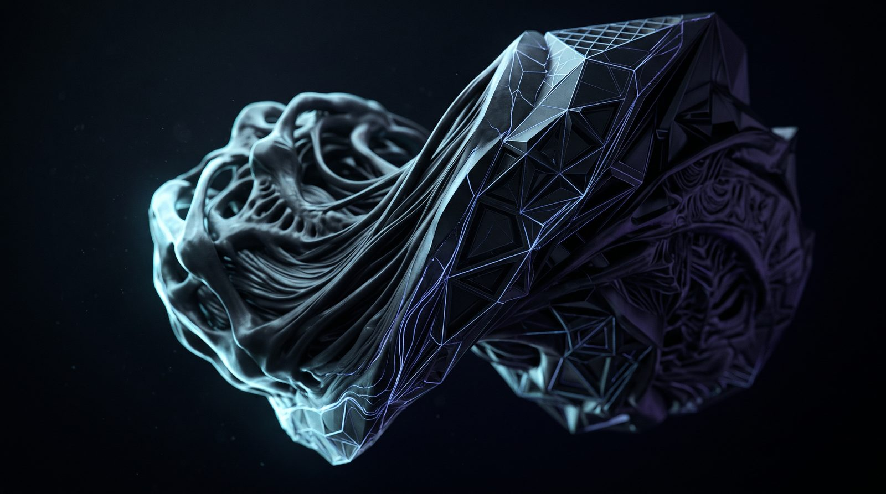
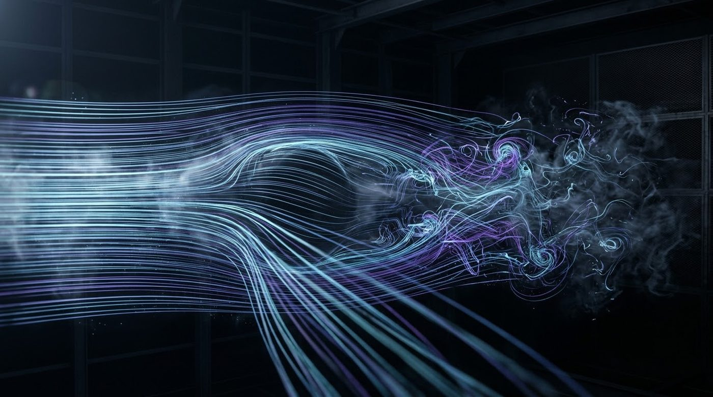
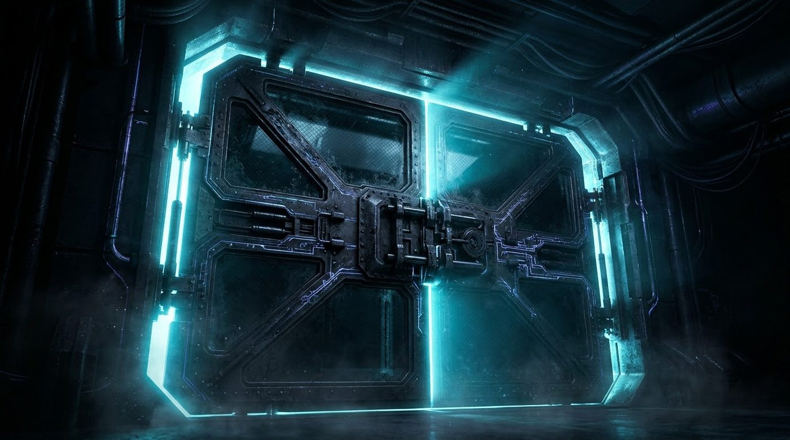

Product report
What this is, and how to drive it
A system for stating biological claims so that a machine can check them — and refuse them. Five surfaces, each documented below, each starting with the thing itself running.
Biology design knowledge lives mostly as tacit knowledge. An agent that designs an organism has no formal way to check its design the way it can check a proof. These five surfaces are an attempt at the missing check — and, as much as anything, at a system whose default answer is cannot-evaluate rather than a confident number.
Read each chapter top to bottom: the demo first, then how to use it, then the ways it goes wrong.
Five surfaces. Entry points, in order of how often you will want them:
# the law registry and the checker node sim-engine/cli.mjs tool lean_check --json '{...}' --lawset <version> # the capability map: who asks what, and which tools exist for it node sim-engine/cli.mjs tool leanbio_personas node sim-engine/cli.mjs tool leanbio_use_cases node sim-engine/cli.mjs tool leanbio_grand_questions # the harness node sim-engine/validate-cli.mjs --generated <seq> --base <id> --desired "<prose>" # the full tool contract (names, schemas, envelopes) node sim-engine/server.mjs --dump-contract
Four invariants that hold everywhere. Violating any of them is a defect, not a style choice:
- Never sum the five validation results. They are named, not scored.
cannot-assessis not a pass. It is the absence of a judgement.- Never report a composite as the verdict. See §5 for why ours moves 0.4676 → 0.878 on one added criterion the design already met.
- A number you cannot trace to a file is not a number. Recompute; do not transcribe.
120.000 s, 1920×1080 master, shown here at 1280. Score generated with Suno and laid under the cut so the close plays out in silence rather than stretching the music to fit. Ten of the fifteen beats carry live pages, seven of them screen-recorded in motion.
Surface 1 · Nanopubs
One claim, small enough to be wrong
Every record points back at the exact line it came from, and says what it does not establish.
Surface 1
Generating nanopubs
A claim, its evidence, and its provenance, as four named RDF graphs that a validator either accepts or does not.
What you are making
One nanopublication is one claim small enough to be wrong on its own. It carries four graphs: the assertion (what is claimed), the provenance (where it came from), the pubinfo (who published it and when), and the head that names the other three.
The thing that makes a record useful here is not the ontology. It is that someone reading the assertion can get from it back to the exact line of the exact source it came from — and that the record says what it does not establish.
The quotable-line test
Before you submit, find the one sentence in your record that a reader could lift and quote. If that sentence is true of the finding and states the finding's limit, the record is honest. If the limit only exists in your head, the record is not.
Passes
“Guide 3 is the only one of the four with a perfect match at the intended locus; this does not establish that it cuts efficiently, which no computation here can show.”
Fails
“Guide 3 is the best guide.” — Best by what measure, and silent on everything it cannot see.
Produce
One TriG file per finding. Four named graphs. Unsigned drafts go to the test registry; production publishing is irreversible and requires the signing key owner's explicit approval — never publish to production on your own initiative, and never under a key that is not yours.
# validate before you do anything else node holdout/nanopubs/check.mjs <dir-or-file.trig> # exit 0 and an empty `unexpected` list is the only pass
Decision rules
- Every assertion literal over 40 characters must carry a locator
(
file:line, a field name, or a SHA-256) in its subject block. - Every numeric literal in the assertion graph must appear in the source dossier. A number you computed is a new finding and needs its own locator.
- The claim's
dct:descriptionmust contain a status word (established, observed, inconclusive, pre-registered, measured, not established) and a limiting clause (does not establish…, is not evidence of…, says nothing about…). - If you are producing several records, no two may share a byte-identical
rdfs:labelordct:description. Shared template text is not content.
The errors that actually happen
These are not hypothetical. Each was produced by a competent agent in our own benchmark and caught by the validator.
| Error | What it looks like | Fix |
|---|---|---|
| Invented IRI scheme | urn:locator:... — 11 occurrences in one record. The validator rejects it as an
invalid URI protocol and the whole record fails. |
Locators are literals, not IRIs. Put the file:line string in a literal
and keep IRIs to resolvable schemes. |
Hard RDF ERROR |
A syntax break — usually an unescaped quote or newline inside a dct:description. |
Escape the literal. A description containing a newline followed by ISSUES: can
also forge a section marker and shadow the validator's real output. |
| Boilerplate reuse | Three records, one label. Looks like coverage, carries one record's worth of information. | Write each description from its own finding. If two findings genuinely share a sentence, they are probably one record. |
| Unsupported numeric claim | A figure in the assertion graph that is in no source. Usually a rounded or re-derived number. | Quote the source's number, or make the derivation its own record with its own locator. |
| Untraceable assertion | A long, confident literal in a subject block with no locator anywhere in it. | Cite or cut. An assertion with no locator is an opinion. |
Three validator complaints that are not errors
On an unsigned draft the checker legitimately reports these, and they are allowed by name in
holdout/nanopubs/check.mjs:
Nanopub has no signature element.— correct; it is unsigned.Nanopub has no assertion template.— correct; templates are optional.Unexpected graph uri: http://purl.org/nanopub/temp/…— correct; a draft has no trusty URI yet.
When you are not sure
The rule is the same at every layer of this system: an absence is a result, and it is reported as an absence.
- Unsure whether the source supports the claim? Narrow the claim until it does. A smaller true record beats a larger unsupported one.
- Two sources disagree? Do not average them and do not pick. Make one record per source, each citing its own, and a third that states the disagreement as the finding. See §2.
- The source is a review citing someone else? Mark it secondhand. The repository
has a named evidence grade for exactly this (
measured-secondhand): a measurement quoted from a citing paper rather than read in the source, to be treated as provisional. - You cannot find a locator? Then you do not have the finding yet. Stop and say so.
- Tempted to publish to production to "see if it works"? Do not. Publishing is permanent and public, and a retraction is itself a permanent public act.
Surface 2 · LeanBio
The literature, made checkable
Claims distilled from papers into Lean 4. It compiles and it survives the evidence, or it does not enter.
Surface 2
Turning nanopubs into Lean — including when they conflict
Two gates. It compiles, and it survives debate on the evidence. Both, or it does not enter as an axiom.

Generated · Nano Banana 2.1Claim, hypothesis, witness, axiomA statement that compiles but is trivially true is a failure, not partial credit.
Why formalise at all
A claim written in English can be read five ways. Written in Lean it can be read one way, and the kernel will tell you if the proof is wrong. What you lose is nuance; what you gain is that disagreement becomes locatable — people stop arguing about what was meant and start arguing about a hypothesis.
The hard part is not the proof. It is writing a statement that is both faithful to the claim and non-trivial. Most bad formalisations fail the second test while looking fine.
Produce
# one self-contained file, Mathlib only theorem task_<id> (h₁ : …) (h₂ : …) : … := by … # plus a witness that instantiates every hypothesis with concrete numbers example task_<id>_witness : … := … # ONE lake process at a time. Never concurrently. cd lean && lake env lean <file>
Hard gates
compiles— exit 0, noerror:on stderr. Ground truth.no_cheats— nosorry,admit,axiom,native_decide,@[implemented_by,Classical.choiceas a proof term, or:= trivialas the whole proof.witness_present_and_proved— the witness declaration exists and the file compiles.hypotheses_load_bearing— strip every binder whose type contains< ≤ = ≠ > ≥ ∈and recompile. If it still compiles, the hypotheses were decorative and the formalisation FAILS. A statement that compiles but is trivially true is the most common silent failure.
The non-vacuity rule
A theorem whose hypotheses can never be satisfied is true and worthless. Every law in the registry therefore carries a witness: concrete numbers that satisfy every hypothesis, proved, not asserted. If you cannot produce a witness, you have probably over-constrained the statement — and that is information about the claim, not about Lean.

Generated · Nano Banana 2.1Two sources, one disagreementDo not average them and do not pick. Find the weaker claim both support, or make the condition a load-bearing hypothesis.Conflicting evidence, and conflicting nanopubs
Conflict is the normal case in biology, and the instinct — pick the better paper, or split the difference — destroys the thing worth keeping. Three moves, in order of preference:
Apply in order. Do not skip to 3.
- Find the common weaker claim. Two studies reporting 63 mm/s and 200 mm/s for the same escape speed both support “escape speed exceeds 50 mm/s”. Formalise that. It is less exciting and it is true.
- Make the disagreement a hypothesis. If the conflict is conditional — different
assay, different stage, different temperature — then the condition belongs in the statement as a
binder. The theorem becomes “under these conditions, …”, and the conflict has been converted
into a load-bearing hypothesis, which is exactly what the
hypotheses_load_bearingcheck rewards. - Formalise neither, and record the conflict. Where the sources genuinely contradict at the same conditions, the finding is the contradiction. Publish that as its own nanopub, cite both, and leave the axiom unclaimed. An unresolved conflict is a result.
What you may never do is average two measurements into a number that neither source reports, or quietly adopt the one that supports the design you already have.
Exemptions: explained is not the same as silent
Some laws in the registry evaluate nothing against a given design, legitimately — they constrain something the design does not state. The registry keeps an explicit list of these with a written reason for each, rather than letting them pass quietly:
Source: lean/registry/check-exposed.mjs → NO_DESIGN_ROW,
lean/registry/lawsets/current.json. Counted at build time by
dashboard/public/docs/build.mjs.
This distinction cost us a correction. The count of laws that silently evaluated nothing was a defect. The list above is a documented exemption list. They are not the same number and they are not the same thing — and conflating them is how a project starts believing its own coverage.
LeanBio Forum
Big questions worth opening
The forum exists so that these stop being essays. Each one below has a formalisable core — the part of it that could be stated precisely enough to prove, disprove, or at least bound.
None of these is answered here. What the forum offers is a place to put the piece you can state: a hypothesis made load-bearing, a bound, a special case. Partial characterisation is the realistic output and it is a real one.
Query these directly: node sim-engine/cli.mjs tool leanbio_grand_questions. Each carries
a formalisable core and, where one exists, the repository asset that already touches it.
Surface 3 · MCP · API · CLI
Weigh a claim against the evidence
The laws, organisms, simulators and harness as tools — and a checker that would rather say cannot-evaluate than guess.

Surface 3
The MCP server
The laws, the organisms, the simulators and the harness, as tools — designed around who actually asks, not around what was easy to expose.
$ node sim-engine/cli.mjs tool lean_check --json '{...}' --lawset 1.8.1 lawset 1.8.1 out of scope 18 cannot-evaluate 17 ← and it names, for each one, exactly which input it would need
The system declining to guess is the feature. A checker that always returns a number is a checker you cannot use.
Built around personas, not endpoints
The tool surface was derived from a capability map: who would use this, what they would actually ask, and which of the big open questions in biology it touches. That map is itself a tool — you can ask the server who it was built for.
It also records the gaps. Of the tool references the use cases need, a large fraction are missing, and the map says so rather than rounding up. The honest summary of this surface is: strong on laws and validation, thin on data integration.
Transports
- Local MCP / CLI —
sim-engine/server.mjs, full contract.node sim-engine/cli.mjs tool <name> --json '{…}'for any tool. - Hosted MCP —
mcp/server.mjs, a subset, versioned separately. - Contract —
node sim-engine/server.mjs --dump-contractgives every name, schema and envelope. Read the contract rather than guessing a tool name.
Envelopes
Every tool returns a named verdict, never a bare value. Treat
cannot-evaluate / cannot-assess as information: they name the missing input.
Supply it and call again, or report the absence. Do not substitute a default.
The tool families
| Family | What it does | Representative tools |
|---|---|---|
| Laws & Lean | List, fetch, check against, propose and verify laws at a pinned lawset. | lean_laws_list lean_check lean_propose lean_verify |
| LeanBio forum | Queue a claim, ground it, and query the capability map. | leanbio_claim leanbio_personas leanbio_use_cases leanbio_grand_questions |
| Organisms | Create, inspect and edit an organism and its parts. | organism_create organism_edit organism_list_parts |
| Simulation | Morphogen diffusion, growth, physiology chains, scenarios, optimisation. | morphogen_diffusion growth_trajectory scenario_run optimize |
| Omics | Gene and part lookup, and nearest-relative comparison. | omics_gene closest_relative_genotype closest_relative_phenotype |
| Validation | The harness: five named results, functional resolution, physics. | validate_generation functional_resolution physics_check |
| Editing | Germline edit plans — a proposal for a wet lab, never a protocol. | edit_plan edit_plan_methods |
| Swarm | Post, claim and submit tasks across agents; session journal. | swarm_post_task swarm_claim session_post |
Every tool name, as the contract reports it
Surface 4 · Design Studio
Design an organism, layer by layer
From a sentence to a specification, down nine layers to sequence — and out to a printer as real geometry.

Surface 4
Design Studio — and getting results out
Text to organism, down through nine layers to sequence and developmental time. In active development, and labelled that way on screen.

Generated · Nano Banana 2.1A fish, with wingsNine layers down from prose to sequence — and every layer can refuse.Example uses
| You want | Call | What comes back |
|---|---|---|
| A morphological augmentation from prose | parse_design_text → design_from_spec |
An SI-unit design object the law checker will accept or reject. |
| To know whether it is even legal | lean_check at a pinned lawset |
Per-law holds / violated / cannot-evaluate, never a score. |
| Candidate variants | generate_candidates | Alternatives to rank — ranking is yours. |
| A developmental time course | scenario_timecourse | Growth through stages. |
| The genetic changes implied | edit_plan |
Guides, donors, pegRNAs, off-target table. A proposal for a wet lab, not a protocol. |

Generated · Nano Banana 2.1Two strands, a handful of differencesThe mesh and the sequence are ordinary files. What matters is which loci differ and which of those a real organism reproduces.Exporting to your own validator
Nothing here is a closed loop. The two artefacts worth carrying out are the mesh and the sequence, and both are ordinary files you can hand to your own tools.
| Artefact | Format | Carries | Watch out for |
|---|---|---|---|
| Mesh | .stl, millimetres |
The phenotypic surface, scaled to a stated standard length, with a measured solid volume and a centre-of-mass estimate. | Fin membranes are zero-thickness surfaces and must be thickened before printing. Clean-up is merge-by-distance and normals-outside only — there is no manifold repair, so the signed volume is approximate where non-manifold edges remain. The centre of mass is an area-weighted surface centroid (a uniform-shell approximation), not a solid centroid. |
| Sequence | plain nucleotide / FASTA | The predicted edited locus, with coordinates on the stated assembly. | Assembly and strand are part of the answer. A sequence without its assembly is not a result. |
| Design object | JSON, SI units | Every quantity under the contract's own key, plus an assumptions list. |
Anything you chose rather than were given belongs in assumptions, or it reads as
a claim. |
Print it
The design leaves the screen as geometry. These are the files themselves, not renderings of them — the same ones a printer takes.
/print/, which carries the explode scrubber and
per-part downloads.Before you print
Fin membranes are zero-thickness surfaces in the whole-animal meshes and must be thickened; the glider variant already has solid fins. Clean-up was merge-by-distance and normals-outside only — there is no manifold repair, so where non-manifold edges remain the signed volume is approximate and the centre of mass is an area-weighted surface centroid, not a solid one. A superseded 100-part set built on a chosen rather than measured fin ratio is deliberately not offered here.
The round trip — the validation we most want and have not run
Feed the predicted sequence back into Design Studio in a fresh session and ask it to predict the phenotype. If it does not come back to where you started, something in the chain is wrong. This loop has never been run end to end, and it is marked as unevidenced everywhere it appears. Not yet run
Surface 5 · Validation harness
From genotype to phenotype, and back
Map a design to its closest real relative, annotate every difference, check the CRISPR plan — then withhold the word validated.
Surface 5
The validation harness
It maps a design to its closest real functional analogue, annotates the differences, checks it against the laws, runs physics on the mesh — and then withholds the word “validated”.

Generated · Nano Banana 2.1The part that says noHalf anatomy, half geometry. The harness reports which half it could not assess.
The five named results
They are named, reported separately, and never summed:
| Result | Asks |
|---|---|
genotype_similarity | How close is this sequence to its nearest real relative? |
phenotype_similarity | How close is the resulting form to a real organism's? |
lean_check | Does it violate a law in the registry at the pinned lawset? |
functional_resolution | Of the functional requirements, how many can be assessed at all — and of those, how many resolve? |
physics_check | Does the mesh fly, swim, stand, in the simulator? |

Generated · Nano Banana 2.1It separates, and then it tumblesThe simulator does not ask whether the design is plausible. It asks whether this body leaves the water, and answers 0.67 m/s against 8.64 required.Neighbour checking and functional explainability
“Is this design plausible?” is not answerable. “What is the nearest thing that actually exists, and exactly how does this differ?” is. The harness answers the second and reports the difference interpretably — which loci differ, which of those are reproduced in a real organism, and which compensatory pathways would have to carry the change.
The important half is the part it cannot resolve. On our own design, of 73 functional requirements only 22 were assessable, and 19 of those 22 did not resolve. The page renders that as an absence rather than omitting it.
# nearest real analogue, both directions node sim-engine/cli.mjs tool closest_relative_genotype --json '{…}' node sim-engine/cli.mjs tool closest_relative_phenotype --json '{…}' # the functional difference, annotated node sim-engine/cli.mjs tool functional_resolution --json '{…}'
Read per_scale_coverage before reading any result. A scale with no
coverage has not passed; it has not been looked at. Name the scales that could not be assessed, every
time.
Lean verification through the MCP server
The harness does not hold its own copy of the laws. It calls lean_check at a
pinned lawset version, so that a law released mid-run cannot move a result, and so
that any verdict can be reproduced later by pinning the same version. Each law that fires names
itself; each law that cannot evaluate names the input it would need.
Mesh segmentation into biological qualities Not built
Segmenting the generated mesh into named anatomical regions and scoring each for biological quality — plausibly an LLM or VLM job — is a design intent, not a shipped capability. There is no vision model and no mesh segmentation anywhere in the engine, and the docs build asserts their continued absence so this page cannot quietly start claiming them. What exists today is whole-mesh physics plus per-locus functional annotation.

Generated · Nano Banana 2.1The gate is shut, and says whyThe word "validated" is withheld, and the reasons it is withheld are listed. A refusal that explains itself is the product.Why there is no composite score
There is one, it is reported, and it is never the verdict — because adding one criterion the design already satisfied moved the same design from 0.4676 “not plausible” to 0.878 “plausible.” The inputs were byte-identical apart from a phrase in the desired-phenotype prose.
A number that moves like that is not a score. No released version's composite has ever passed a blind evaluation. If you are consuming this system, do not gate on the composite, and do not let a high composite plus “nothing failed” read as a pass — that exact combination is the trap case in our benchmark.
Bring your own key
Model-backed steps are BYOK. The system works without any key — every model-derived field reports
{ran: false} with the reason, and nothing is silently withheld or substituted. A key adds
ranking; it never adds a gate.
| Variable | Used for | Without it |
|---|---|---|
NVIDIA_API_KEY | Evo2 (genomic LM) sequence likelihood, used to rank codon and blocking-mutation options. | Every Evo2 field is {ran:false, reason:"NVIDIA_API_KEY not set"}; the edit plan is complete without it. |
NEBIUS_API_KEY | Hosted inference for generative steps. | Those steps report as not run. |
Storing the key so the model can use it and nothing else can
- Environment variable at call time, and nowhere else. The code reads
process.env.NVIDIA_API_KEYat the moment of the call. It is never written to a file, cached, logged, echoed into output, or put in a URL. - Never commit it. Not to
.envthat is tracked, not to a config file, not into a notebook cell, not into a prompt you paste somewhere. - Pass it inline for one command rather than exporting it into a shell that other
processes inherit:
NVIDIA_API_KEY=… node … - Use a secret manager for anything long-lived — your OS keychain, or your CI's secret store. A key in a shell history file is a leaked key.
- Only the key's prefix shape is ever reported (
nvapi-vsbak-), because that is the one diagnostic that matters: NIM keys beginnvapi-, and a Brevbak-key will authenticate nowhere here and returns 401. - Rotate on exposure. If a key has ever appeared in a transcript, a log or a screenshot, it is burned — rotate it rather than reasoning about who saw it.
Standing
What is not built
Kept here so that no chapter above has to be vague.
| Thing | Status | Note |
|---|---|---|
| Mesh segmentation into biological qualities (LLM/VLM) | Not built | Design intent. The docs build asserts its absence from the engine. |
| The round trip — predicted sequence back into a fresh Design Studio session | Not yet run | The single most informative validation available to us, and it has never been run end to end. |
| Data integration behind the capability map's use cases | Partial | A large share of the tool references the use cases need are missing. The map reports the gap rather than rounding up. |
| Aves (birds) | Held out | Frozen holdout. No bird data appears anywhere in this system, deliberately. |
—